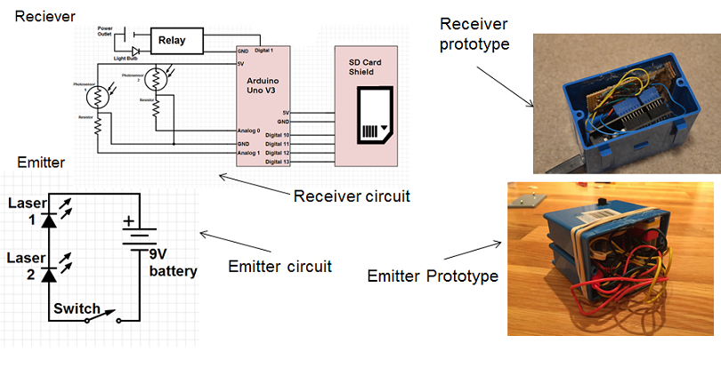
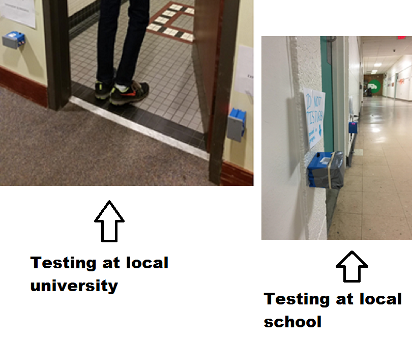
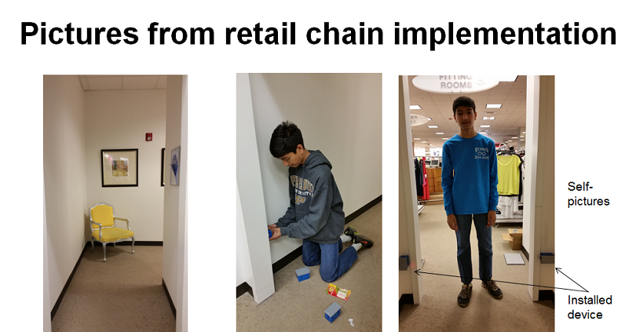
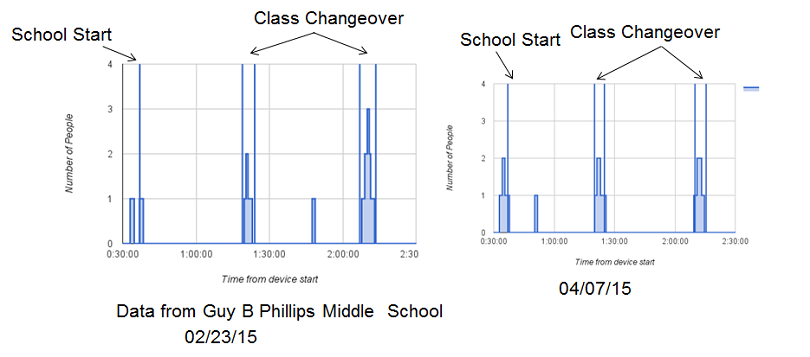
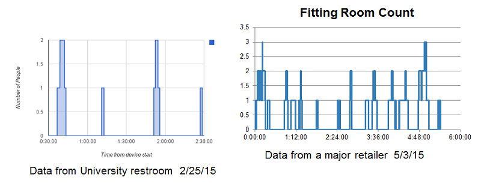
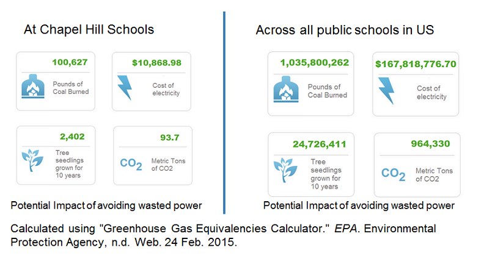

Loading
Rohan Deshpande
To invent, you need a good imagination
and a pile of junk. -Thomas A. Edison
2016- Beijing Youth Science Creation Competition (BYSCC)
2016- NCISC Top 4 in US
2015- ISEF Finalist
2015- Google Sciece Fair Regional Finalist (Top 18 in US and Top 45 in World)2015- NC Science Fair 2nd Place
Humans have been using switches for controlling lights, and other power sources, for a long time. When people leave their rooms, they often forget to turn off these switches resulting in the wastage of unimaginable amount of electricity. There is a need for a new cheap technology that counts the number of people in a room and automatically turns off lights and other powered devices when a room is vacant. My solution is an inexpensive device that accurately tracks the number of people in a room by monitoring its entrance. This small device, installed invisibly, includes two low-power laser beams shining on two photoelectric sensors. The data from the two sensors are outputted to an arduino microcontroller which monitors the people count in a room. The arduino knows whether to increment or decrement the people count in the room based on the sequence in which the two photoelectric sensors gets tripped. The arduino then communicates with a relay which controls the state of the power sources (on or off). Data collected from a local school supported my hypothesis stating that the restrooms were vacant during a large portion of the day, although the lights were on during these periods. The device was also tested at a University and the fitting rooms of a major retail chain. The amount of wasted electricity would decrease significantly if my device is implemented in numerous locations including homes, schools, public restrooms, offices, retail stores, etc., thus lowering the environmental impact of wasted power consumption.
Given the large amounts of electricity wastage due to lights and other powered devices remaining ON while a room is vacant, can one use a device that accurately counts the number of people in a room in real-time by monitoring its entrance and communicate this to a relay switch to turn lights/devices on/off as desired? I have worked for last three years on making my school district (CHCCS) sustainable by starting new initiatives on cafeteria recycling and composting programs for which I won national recognition. In one of my several meetings with the sustainability director of CHCCS schools, I came to know that our next focus was going to be on reducing electricity consumption. I observed that lights in our school restrooms are ON throughout the day even while the restrooms are vacant. At my home, lights and other powered devices remain ON while no one is in a room, as we often forget to turn off lights/devices. Hence, I wanted to test two hypotheses at my school: H1: School restrooms will be primarily used during the five minute delay between periods, making the restrooms vacant for a large portion of the day. H2: The resulting wastage of electricity can be avoided by automatically switching off lights when the room is empty. I set a goal of developing a counter that accurately counts the number of people in a room by monitoring its entrance and communicates this to a relay-switch to turn lights/devices on/off as desired.
I first wanted to understand the impact of electricity wastage in buildings in the United States. I read the report by the US Energy Information Administration (Energy Outlook 2015). I was surprised to find that, although renewable energy generation has increased in recent years, 67% of electricity generated in the United States still relies on fossil fuels. I was even more surprised to read that this fraction is not projected to decline significantly by the year 2040.
Source: US Energy Information Administration: Energy Outlook 2015
This report also mentioned that residential and commercial energy use leads to 37% of CO2 emissions, and buildings consume 72% of all electricity that is generated. A McKinsey report (2009) wrote that about 11 GtCO2 emissions per year of abatement opportunities carry a net economic benefit. These opportunities largely consist of energy efficiency measures in the buildings and transport sectors (Mckinsey & Co. 2009). I also visited the website of the US green building council (http://www.usgbc.org/) where I read about their LEED framework for green building design (http://www.usgbc.org/leed)From this research, I concluded that it is going to take decades for electricity generation from renewable resources to be a significant source. Hence, we need to do a better job of using electricity that is primarily generated from fossil fuels. By improving the efficiency of our buildings and cutting electricity consumption, we can significantly reduce CO2 and other GHG emissions.I then researched technologies that are available on the market and found two:Camera technology costs hundreds of dollars making it difficult to install in every room. Also, cameras are error prone due to similar shades of colors between the person and its background. Finally, cameras cannot be installed outside/inside restrooms due to privacy.
While motion sensors are popular in many buildings, they have several disadvantages. Motion sensors cost more than $50 and hence they are not widely used. Motion Sensors are able to detect motion but not the direction of motion, and, hence, they cannot count the number of people in a room. Hence, these devices guess the amount of time a person will be in a room. Often, the device turns the lights off while the person is still in the room or stays on while the person has left the room. A LEED commissioning agent mentioned to me that some commercial contractors have uninstalled motion sensors from buildings due to safety issues. The motion sensors turned lights off while people were in the room causing some elderly people to trip.
I also did a preliminary patent search and found that no patent exists for a device that counts the number of people in a room. I concluded that there is a need for a new cheap technology that counts the number of people in a room and automatically turns off lights and other powered devices when a room is vacant.
I set the following engineering goals for my device:
The innovation in my device is the use of a dual-laser trip wire system that is a connected to an Arduino micro-controller. My design includes an emitter and a receiver. The emitter has two low-power laser beams shining on two photoelectric sensors installed in a receiver. The data from the two sensors are outputted to an arduino microcontroller which monitors the people count in a room. The arduino knows whether to increment or decrement the people count in the room based on the sequence in which the two photoelectric sensors get tripped. The arduino then communicates with a relay which controls the state of the power sources (on or off). A circuit diagram of my design and built prototype is shown below
I bought parts for the above circuit from SparkFun electronics, Radio Shack, and Lowe�s. I then assembled the Receiver and the Emitter at home using my experience building circuits.I then wrote and uploaded the code onto Arduino microcontroller.
//Let the number of people in the room be called ctr
//create value called thresh, variable compensates for ambient light
//start time
//Loop cycle begins
//Let the values at the two photosensors be stored at variables sensA sensB
//Let the last number of people be called lastcnt
//check if sensA>thresh and sensB
// then increment ctr
//check if sensAthresh
// then decrement ctr
//check if ctr is not equal to the last count
// then write time to SD card
// then write ctr to SD card
//check if ctr>0
// then turn light on
//else turn light off
//Loop cycle ends
I analyzed the data collected by the device from the tests that I ran at the local school, university, and a major retailer. The device provided me with time-stamped data for every entry or exit from the room. It also gave me count data on the number of people in the room over time. A graph of the count data from my local school is shown below.
The above graph reveals that, apart from a few exceptions, most restroom usage happens during class changeovers. Further analysis revealed that our school restroom was empty 91% of the time while the lights were always on. I also plotted similar pictures for the data collected from a local university and a major retail chain as shown below.
The picture on the left collected from the university restroom shows that, while there is no predictable pattern to when the restroom gets used, the restroom is empty 90% of the time, while the lights were always ON. The picture on the right above shows data obtained under high traffic conditions in the fitting room of a major retail chain. This data was used to verify the accuracy of the device. While my device was collecting the data, a research assistant manually monitored the fitting room usage. Further analysis revealed that my device was 100% accurate, and my device recorded no erroneous entry or exits.
To estimate the savings from my device, I first obtained CHCCS electricity cost and usage data from our sustainability director. My data analysis showed 91% electricity wastage from 7:30am to 7:30 pm. Our school restrooms have 10 bulbs at 32 watts each = 320 W/restroom. Thus, the estimated wasted electricity per day = .91 * 12 * 320 = 3,494 Wh/Day/restroom. Our schools have 12 public restrooms (student and faculty), our schools are open 180 days per school year, and there are 18 schools in our school district. Using these numbers, I estimated that our school district wasted 135,862 kWh/School Year. The cost of electricity for our school district is 8 cents/kWh. Thus, our district wastes $10,869 in annual electricity expenditure. My device was built at a cost of less than $20/device, and if it was installed in every restroom, it will pay for itself in less than 6 months.
I then projected the benefits of this device if it was installed in all public schools in the United States. Assuming 98,817 Public schools in the United States (source: National Center for Education Statistics), and an average electricity cost of 12 cents per kWh, I calculated that my device would save $167 million annually by reducing wasted electricity consumption. While this number is an estimate, my calculation shows that the impact of my device can be huge! I further entered these numbers in EPA�s greenhouse gas equivalencies calculator, as shown below. These numbers could be even larger if the device was installed in every home and building in the US.
In this project, I invented a novel device using an Arduino microcontroller, and a low-power dual laser tripwire system, to count the number of people in a room by monitoring its entrance and communicate this to a relay switch to turn lights/devices on/off as desired. I built this device from parts obtained locally for less than $20, and tested it extensively at home. I then deployed this device at a local school, a University, and a major retail chain. Analysis of data collected from these experiments show that my device may have a huge impact. My school district can potentially save ten thousand dollars annually if my device was installed at all school restrooms. If installed at all restrooms in all public schools in US, my device can potentially save $167 million annually from reducing wasted electricity consumption. Analysis from EPA equivalencies calculator shows that this is equivalent to reducing one billion pounds of coal burned, thus reducing CO2 emissions by one million metric tons.
To understand implementation issues and feasibility of my device, I presented results of my project to the Sustainability director of CHCCS Schools. I also received feedback from a LEED commissioning agent who installs motion sensors in commercial buildings. Finally, the retail chain fitting-room experiment provided further feedback. I have concluded that, for my device to be feasible, the device needs to be hidden in a wall so that it can be invisible. Also, it should require minimal rewiring and needs to connect to existing wiring. The alignment of both lasers on the device needs to be simplified and device size needs to be shrunk using a PCB board for easy installation. I am confident that these issues can be easily addressed and I have already thought of solutions for these issues.
My device has many other potential applications. As demonstrated by my experiment at a major retail chain, my device can be used as a real-time traffic counter in fitting rooms and other areas in retail stores. My device can be installed in Smart automated homes / Green buildings to reduce environmental impact of wasted electricity consumption, and, thus, can potentially be used to earn credits for LEED certification of buildings. It can be used in elderly homes/hospitals for fall detection in bathrooms. It can also be used in schools to monitor abnormal restroom usage while classes are on, by making restroom usage data available on a real-time basis to school administrators.
I fully intend to pursue commercialization of my innovative device. A preliminary patent search showed that no such device/patent exists. In the next year, I intend to file for a patent on this technology. This device can be commercialized by licensing it to commercial device manufacturers / building contractors for device installation in new buildings / retrofitting existing buildings. It can also be potentially licensed to smart/green device manufacturers. I am excited that a simple device that I invented has the potential to have such a large impact.